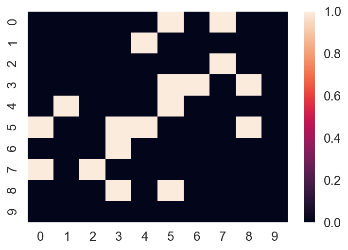
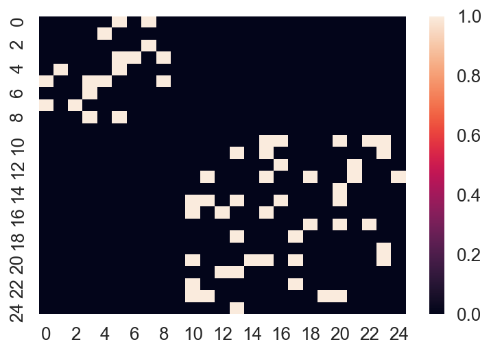
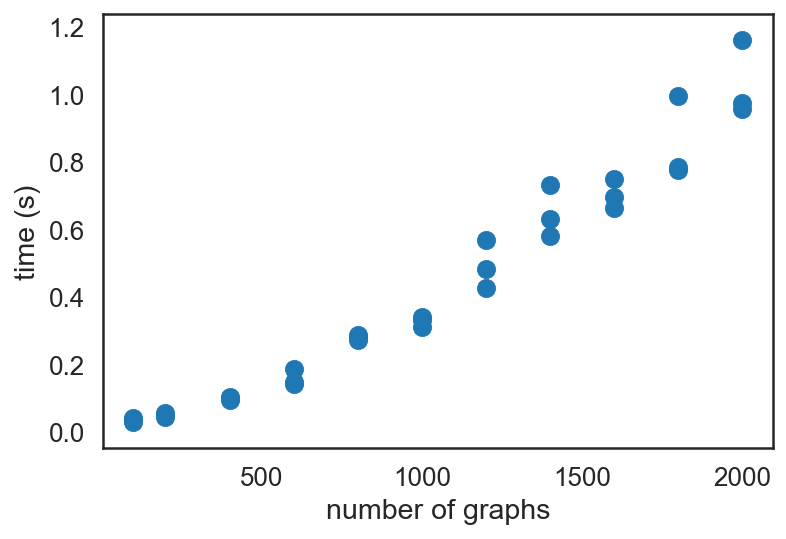
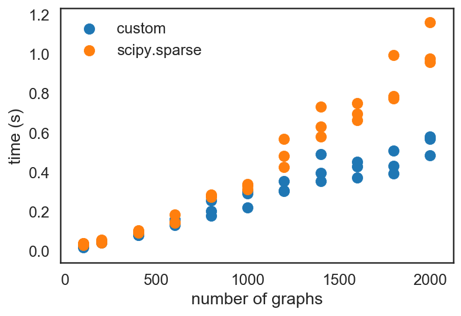
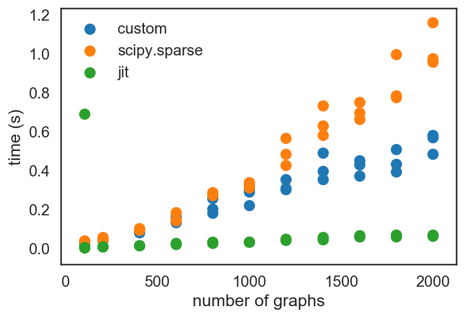
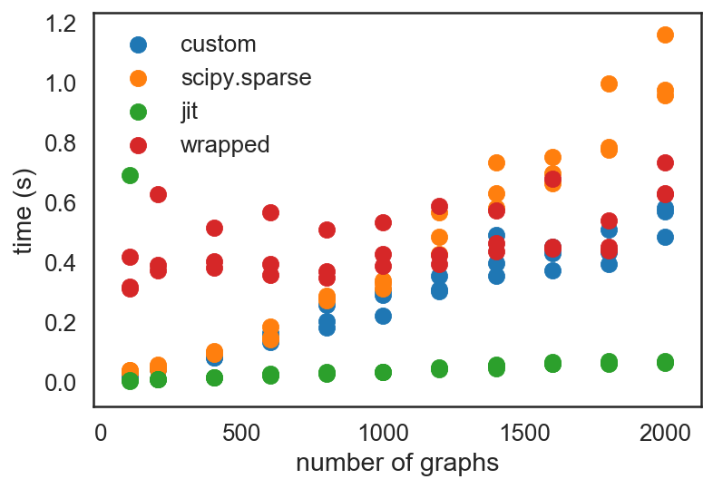

Having used Black for quite a while now, I have a hunch that it will continue to surpass its current popularity amongst projects.
It's one thing to be opinionated about things that matter for a project, but don't matter personally. Like code style. It's another thing to actually build a tool that, with one command, realizes those opinions in (milli)seconds. That's exactly what Black does.
At the end of the day, it was, and still is, a tool that has a very good human API - that of convenience.
By being opinionated about what code ought to look like, black has very few configurable parameters. Its interface is very simple. Convenient.
By automagically formatting every Python file in subdirectories (if not otherwise configured so), it makes code formatting quick and easy. Convenient.
In particular, by being opinionated about conforming to community standards for code style with Python, black ensures that formatted code is consistently formatted and thus easy to read. Convenient!
Because of this, I highly recommend the use of black for code formatting.
pip install black
Did you enjoy this blog post? Let's discuss more!
bayesian data science statistics
It’s definitely not easy work; anybody trying to tell you that you can "just apply this model and just be done with it" is probably wrong.
Let me clarify: I agree that doing the first half of the statement, "just apply this model", is a good starting point, but I disagree with the latter half, "and just be done with it". I have found that writing and fitting a very naive Bayesian model to the data I have is a very simple thing. But doing the right thing is not. Let’s not be confused: I don’t mean a Naive Bayes model, I mean naively writing down a Bayesian model that is structured very simply with the simplest of priors that you can think of.
Write down the model, including any transformations that you may need on the variables, and then lazily put in a bunch of priors. For example, you might just start with Gaussians everywhere a parameter could take on negative to positive infinity values, or a bounded Half Gaussian if it can only take values above (or below) a certain value. You might assume Gaussian-distributed noise in the output.
Let’s still not be confused: Obviously this would not apply to a beta-bernoulli/binomial model!
Doing the right thing, however, is where the tricky parts come in. To butcher and mash-up two quotes:
All models are wrong, but some are useful (Box), yet some models are more wrong than others (modifying from Orwell).
When doing modeling, a series of questions comes up:
I am quite sure that this list is non-exhaustive, and probably only covers the bare minimum we have to think about.
Doing these model critiques is not easy. Yet, if we are to work towards truthful and actionable conclusions, it is a necessity. We want to know ground truth, so that we can act on it accordingly, and hence take appropriate actions.
I have experienced this modeling loop that Mike Betancourt describes (in his Principled Bayesian Workflow notebook) more than once. One involved count data, with a data scientist from TripAdvisor last year at the SciPy conference; another involved estimating cycle time distributions at work, and yet another involved a whole 4-parameter dose-response curve. In each scenario, model fitting and critique took hours at the minimum; I’d also note that with real world data, I didn’t necessarily get to the "win" was looking for.
With the count data, the TripAdvisor data scientist and I reached a point where after 5 rounds of tweaking his model, we had a model that fit the data, and described a data generating process that mimics closely to what we would expect given his process. It took us 5 rounds, and 3 hours of staring at his model and data, to get there!
Yet with cycle time distributions from work, a task ostensibly much easier ("just fit a distribution to the data"), none of my distribution choices, which reflected what I thought would be the data generating process, gave me a "good fit" to the data. I checked by many means: K-S tests, visual inspection, etc. I ended up abandoning the fitting procedure, and used empirical distributions instead.
With a 4-parameter dose-response curve, it took me 6 hours to go through 6 rounds of modeling to get to a point where I felt comfortable with the model. I started with a simplifying "Gaussians everywhere" assumption. Later, though, I hesitantly and tentatively putting in bound priors because I knew some posterior distributions were completely out of range under the naive assumptions of the first model, and were likely a result of insufficient range in the concentrations tested. Yet even that model remained unsatisfying: I was stuck with some compounds that didn’t change the output regardless of concentration, and that data are fundamentally very hard to fit with a dose response curve. Thus I the next afternoon,I modeled the dose response relationship using a Gaussian Process instead. Neither model is completely satisfying to the degree that the count data model was, but both the GP and the dose-response curve are and will be roughly correct modeling choices (with the GP probably being more flexible), and importantly, both are actionable by the experimentalists.
As you probably can see, whenever we either (1) don’t know ground truth, and/or (2) have messy, real world data that don’t fit idealized assumptions about the data generating process, getting the model "right" is a very hard thing to do! Moreover, data are insufficient on their own to critique the model; we will always need to bring in prior knowledge. Much as all probability is conditional probability (Venn), all modeling involves prior knowledge. Sometimes it comes up in non-modellable ways, though as far as possible, it’s a good exercise to try incorporating that into the model definition.
Even with that said, I’m still a fan of canned models, such as those provided by
pymc-learn and scikit-learn - provided we recognize that their "canned" nature and are
equipped to critique and modify said models. Yes, they provide easy, convenient baselines
that we can get started with. We can "just apply this model". But we can’t "just be done
with it": the hard part of getting the model right takes much longer and much more hard
work. Veritas!
Did you enjoy this blog post? Let's discuss more!
dask parallel data science optimization gridengine
I learned a new thing about dask yesterday: pre-scattering data properly!
Turns out, you can pre-scatter your data across worker nodes, and have them access that data later when submitting functions to the scheduler.
To do so, we first call on client.scatter, pass in the data that I want to scatter across all nodes, ensure that broadcasting is turned on (if and only if I am sure that all worker nodes will need it), and finally assign it to a new variable.
from dask_jobqueue import SGECluster from dask.distributed import Client cluster = SGECluster(...) # put parameters in there. client = Client(cluster) data_future = client.scatter(data, broadcast=True)
One key thing to remember here is to assign the result of client.scatter to a variable. This becomes a pointer that you pass into other functions that are submitted via the client.submit interface. Because this point is not immediately clear from the client.scatter docs, I put in a pull request (PR) to provide some just-in-time documentation, which just got merged this morning. By the way, not every PR has to be code - documentation help is always good!
Once we've scattered the data across our worker nodes and obtained a pointer for the scattered data, we can parallel submit our function across worker nodes.
Let's say we have a function, called func, that takes in the data variable and returns a number. The key characteristic of this function is that it takes anywhere from a few seconds to minutes to run, but I need it run many times (think hundreds to thousands of times).
In serial, I would usually do this as a list comprehension:
results = [func(data) for i in range(200)]
If done in parallel, I can now use the client object to submit the function across all worker nodes. For clarity, let me switch to a for-loop instead:
results = [] for i in range(200): results.append(client.submit(func, data_future)) results = client.gather(results)
Because the client does not have to worry about sending the large data object across the network of cluster nodes, it is very fast to submit the functions to the scheduler, which then dispatches it to the worker nodes, which all know where data_future is on their own "virtual cluster" memory.
By pre-scattering, we invest a bit of time pre-allocating memory on worker nodes to hold data that are relatively expensive to transfer. This time investment reaps dividends later when we are working with functions that operate on the data.
Not really disadvantages (as I can't think of any), just some things to note:
SGECluster instantiation step.Special thanks goes to Matt Rocklin, who answered my question on StackOverflow, which in turn inspired this blog post.
Did you enjoy this blog post? Let's discuss more!
parallel dask gridengine data science optimization
I recently just figured out how to get this working... and it's awesome! :D
If I'm developing an analysis in the Jupyter notebook, and I have one semi-long-running function (e.g. takes dozens of seconds) that I need to run over tens to hundreds of thousands of similar inputs, it'll take ages for this to complete in serial. For a sense of scale, a function that takes ~20 seconds per call run serially over 10,000 similar inputs would take 200,000 seconds, which is 2 days of run-time (not including any other overhead). That's not feasible for interactive exploration of data. If I could somehow parallelize just the function over 500 compute nodes, we could take the time down to 7 minutes.
GridEngine-based compute clusters are one of many options for parallelizing work. During grad school at MIT, and at work at Novartis, the primary compute cluster environment that I've encountered has been GridEngine-based. However, because they are designed for batch jobs, as a computational scientist, we have to jump out of whatever development environment we're currently using, and move to custom scripts.
In order to do parallelism with traditional GridEngine systems, I would have to jump out of the notebook and start writing job submission scripts, which disrupts my workflow. I would be disrupting my thought process, and lose the interactivity that I might need to prototype my work faster.
dask, alongside dask-jobqueue enables computational scientists like myself to take advantage of existing GridEngine setups to do interactive, parallel work. As long as I have a Jupyter notebook server running on a GridEngine-connected compute node, I can submit functions to the GridEngine cluster and collect back those results to do further processing, in a fraction of the time that it would take, thus enabling me to do my science faster than if I did everything single core/single node.
In this blog post, I'd like to share an annotated, minimal setup for using Dask on a GridEngine cluster. (Because we use Dask, more complicated pipelines are possible as well - I would encourage you to read the Dask docs for more complex examples.) I will assume that you are working in a Jupyter notebook environment, and that the notebook you are working out of is hosted on a GridEngine-connected compute node, from which you are able to qsub tasks. Don't worry, you won't be qsub-ing anything though!
To start, we need a cell that houses the following code block:
from dask_jobqueue import SGECluster from dask import delayed, compute cluster = SGECluster(queue='default.q', walltime="1500000", processes=1, memory='1GB', cores=1, env_extra=['source /path/to/custom/script.sh', 'export ENV_VARIABLE="SOMETHING"'] )
Here, we are instantiating an SGECluster object under the variable name cluster. What cluster stores is essentially a configuration for a block of worker nodes that you will be requesting. Under the hood, what dask-jobqueue is doing is submitting jobs to the GridEngine scheduler, which will block off a specified amount of compute resources (e.g. number of cores, amount of RAM, whether you want GPUs or not, etc.) for a pre-specified amount of time, on which Dask then starts a worker process to communicate with the head process coordinating tasks amongst workers.
As such, you do need to know two pieces of information:
queue: The queue that jobs are to be submitted to. Usually, it is named something like default.q, but you will need to obtain this through GridEngine. If you have the ability to view all jobs that are running, you can call qstat at the command line to see what queues are being used. Otherwise, you might have to ping your system administrator for this information.walltime: You will also need to pre-estimate the wall clock time, in seconds, that you want the worker node to be alive for. It should be significantly longer than the expected time you think you will need, so that your function call doesn't timeout unexpectedly. I have defaulted to 1.5 million seconds, which is about 18 days of continual runtime. In practice, I usually kill those worker processes after just a few hours.Besides that, you also need to specify the resources that you need per worker process. In my example above, I'm asking for each worker process to use only 1GB of RAM, 1 core, and to use only 1 process per worker (i.e. no multiprocessing, I think).
Finally, I can also specify extra environment setups that I will need. Because each worker process is a new process that has no knowledge of the parent process' environment, you might have to source some bash script, or activate a Python environment, or export some environment variable. This can be done under the env_extra keyword, which accepts a list of strings.
I put "nodes" in quotation marks, because they are effectively logical nodes, rather than actual compute nodes. (Technically, I think a compute node minimally means one physical hardware unit with CPUs and RAM).
In order to request for worker nodes to run your jobs, you need the next line of code:
cluster.scale(500)
With this line, under the hood, dask-jobqueue will start submitting 500 jobs, each requesting 1GB of RAM and 1 core, populating my compute environment according to the instructions I provided under env_extra.
At the end of this, I effectively have a 500-node cluster on the larger GridEngine cluster (let's call this a "virtual cluster"), each with 1GB of RAM and 1 core available to it, on which I can submit functions to run.
In order to submit jobs to my virtual cluster, I have to instantiate a client that is connected to the cluster, and is responsible for sending functions there.
from dask.distributed import Client client = Client(cluster)
With this setup complete (I have it stored as a TextExpander snippets), we can now start submitting functions to the virtual cluster!
To simulate this, let's define a square-rooting function that takes 2-3 seconds to run each time it is called, and returns the square of its inputs. This simulates a function call that is computationally semi-expensive to run a few times, but because call on this hundreds of thousands of time, the total running time to run it serially would be too much.
from time import sleep from math import sqrt from random import random def slow_sqrt(x): """ Simulates the run time needed for a semi-expensive function call. """ assert x > 0 # define sleeping time in seconds, between 2-3 seconds. t = 2 + random() sleep(t) return sqrt(x)
In a naive, serial setting, we would call on the function in a for-loop:
results = [] for i in range(10000): results.append(slow_sqrt(i))
This would take us anywhere between 20,000 to 30,000 seconds (approximately 8 hours, basically).
In order to execute this in parallel instead, we could do one of the following three ways:
sq_roots = client.map(slow_sqrt, range(10000)) sq_roots = client.gather(sq_roots)
sq_roots = [] for i in range(10000): sq_roots.append(client.submit(slow_sqrt, i, restart=20)) # submit the function as first argument, then rest of arguments sq_roots = client.gather(sq_roots)
sq_roots = [] for i in range(10000): sq_roots.append(delayed(slow_sqrt)(i)) sq_roots = compute(*sq_roots)
I have some comments on each of the three methods, each of which I have used.
First off, each of them do require us to change the code that we would have written in serial. This little bit of overhead is the only tradeoff we really need to make in order to gain parallelism.
In terms of readability, all of them are quite readable, though in my case, I tend to favour the for-loop with client.submit. Here is why.
For readability, the for-loop explicitly indicates that we are looping over something. It's probably more easy for novices to approach my code that way.
For debuggability, client.submit returns a Futures object (same goes for client.map). A "Futures" object might be confusing at first, so let me start by demystifying that. A Futures object promises that the result that is computed from slow_sqrt will exist, and actually contains a ton of diagnostic information, including the type of the object (which can be useful for diagnosing whether my function actually ran correctly). In addition to that, I can call on Futures.result() to inspect the actual result (in this case, sq_roots[0].result()). This is good for debugging the function call, in case there are issues when scaling up. (At work, I was pinging a database in parallel, and sometimes the ping would fail; debugging led me to include some failsafe code, including retries and sleeps with random lengths to stagger out database calls.)
Finally, the Futures interface is non-blocking on my Jupyter notebook session. Once I've submitted the jobs, I can continue with other development work in my notebook in later cells, and check back when the Dask dashboard indicates that the jobs are done.
That said, I like the delayed interface as well. Once I was done debugging and confident that my own data pipeline at work wouldn't encounter the failure modes I was seeing, I switched over to the delayed interface and scaled up my analysis. I was willing to trade in the interactivity using the Futures interface for the automation provided by the delayed interface. (I also first used Dask on a single node through the delayed interface as well).
Of course, there's something also to be said for the simplicity of two lines of code for parallelism (with the client.map example).
The final line in each of the code blocks allows us to "gather" the results back into my coordinator node's memory, thus completing the function call and giving us the result we needed.
That concludes it! The two key ideas illustrated in this blog post were:
submit functions using the client object using client.submit(func, *args, **kwargs). This requires minimal changes from serial code.Here's some tips for doing parallel processing, which I've learned over the years.
Firstly, never prematurely parallelize. It's as bad as prematurely optimizing code. If your code is running slowly, check first to make sure that there aren't algorithmic complexity issues, or bandwidths being clogged up (e.g. I/O bound). As the Dask docs state, it is easier to achieve those gains first before doing parallelization.
Secondly, when developing parallel workflows, make sure to test the pipeline on subsets of input data first, and slowly scale up. It is during this period that you can also profile memory usage to check to see if you need to request for more RAM per worker.
Thirdly, for GridEngine clusters, it is usually easier to request for many small worker nodes that consume few cores and small amounts of RAM. If your job is trivially parallelizable, this may be a good thing.
Fourthly, it's useful to have realistic expectations on the kinds of speed-ups you can expect to gain. At work, through some ad-hoc profiling, I quickly came to the realization that concurrent database pings were the most likely bottleneck in my code's speed, and that nothing apart from increasing the number of concurrent database pings allowed would make my parallel code go faster.
Finally, on a shared cluster, be respectful of others' usage. Don't request for unreasonable amounts of compute time. And when you're confirmed done with your analysis work, remember to shut down the virtual cluster! :)
Did you enjoy this blog post? Let's discuss more!
graph optimization numba python data science sparse matrix
import networkx as nx import numpy as np import scipy.sparse as sp import matplotlib.pyplot as plt import seaborn as sns from tqdm import tqdm from typing import List from numba import jit sns.set_context('talk') sns.set_style('white') %load_ext autoreload %autoreload 2 %matplotlib inline %config InlineBackend.figure_format = 'retina'
At work, I recently encountered a neat problem. I'd like to share it with you all.
One of my projects involves graphs; specifically, it involves taking individual graphs and turning them into one big graph. If you've taken my Network Analysis Made Simple workshops before, you'll have learned that graphs can be represented as a matrix, such as the one below:
G = nx.erdos_renyi_graph(n=10, p=0.2) A = nx.to_numpy_array(G) sns.heatmap(A)

Because the matrix is so sparse, we can actually store it as a sparse matrix:
A_sparse = nx.adjacency_matrix(G).tocoo() [A_sparse.row, A_sparse.col, A_sparse.data]
[array([0, 0, 1, 2, 3, 3, 3, 4, 4, 5, 5, 5, 5, 6, 7, 7, 8, 8], dtype=int32),
array([5, 7, 4, 7, 5, 6, 8, 1, 5, 0, 3, 4, 8, 3, 0, 2, 3, 5], dtype=int32),
array([1, 1, 1, 1, 1, 1, 1, 1, 1, 1, 1, 1, 1, 1, 1, 1, 1, 1], dtype=int64)]
The most straightforward way of storing sparse matrices is in the COO (COOrdinate) format, which is also known as the "triplet" format, or the "ijv" format. ("i" is row, "j" is col, "v" is value)
If we want to have two or more graphs stored together in a single matrix, which was what my projects required, then one way of representing them is as follows:
G2 = nx.erdos_renyi_graph(n=15, p=0.2) A2 = nx.to_numpy_array(G2) sns.heatmap(sp.block_diag([A, A2]).todense())

Now, notice how there's 25 nodes in total (0 to 24), and that they form what we call a "block diagonal" format. In its "dense" form, we have to represent $25^2$ values inside the matrix. That's fine for small amounts of data, but if we have tens of thousands of graphs, that'll be impossible to deal with!
You'll notice I used a function from scipy.sparse, the block_diag function, which will create a block diagonal sparse matrix from an iterable of input matrices.
block_diag is the function that I want to talk about in this post.
block_diag performanceI had noticed that when dealing with tens of thousands of graphs, block_diag was not performing up to scratch. Specifically, the time it needed would scale quadratically with the number of matrices provided.
Let's take a look at some simulated data to illustrate this.
%%time Gs = [] As = [] for i in range(3000): n = np.random.randint(10, 30) p = 0.2 G = nx.erdos_renyi_graph(n=n, p=p) Gs.append(G) A = nx.to_numpy_array(G) As.append(A)
Let's now define a function to profile the code.
from time import time from random import sample def profile(func): n_graphs = [100, 200, 400, 600, 800, 1000, 1200, 1400, 1600, 1800, 2000] data = [] for n in tqdm(n_graphs): for i in range(3): # 3 replicates per n start = time() func(sample(As, n)) end = time() data.append((n, end - start)) return data data_sp = profile(sp.block_diag) plt.scatter(*zip(*data_sp)) plt.xlabel('number of graphs') plt.ylabel('time (s)')

It is quite clear that the increase in time is super-linear, showing $O(n^2)$ scaling. (Out of impatience, I did not go beyond 50,000 graphs in this post, but at work, I did profile performance up to that many graphs. For reference, it took about 5 minutes to finish creating the scipy sparse matrix for 50K graphs.
block_diag performanceI decided to take a stab at creating an optimized version of block_diag. Having profiled my code and discovering that sparse block diagonal matrix creation was a bottleneck, I implemented my own sparse block diagonal matrix creation routine using pure Python.
def _block_diag(As: List[np.array]): """ Return the (row, col, data) triplet for a block diagonal matrix. Intended to be put into a coo_matrix. Can be from scipy.sparse, but also can be cupy.sparse, or Torch sparse etc. Example usage: >>> row, col, data = _block_diag(As) >>> coo_matrix((data, (row, col))) :param As: A list of numpy arrays to create a block diagonal matrix. :returns: (row, col, data), each as lists. """ row = [] col = [] data = [] start_idx = 0 for A in As: nrows, ncols = A.shape for r in range(nrows): for c in range(ncols): if A[r, c] != 0: row.append(r + start_idx) col.append(c + start_idx) data.append(A[r, c]) start_idx = start_idx + nrows return row, col, data
Running it through the same profiling routine:
data_custom = profile(_block_diag) plt.scatter(*zip(*data_custom), label='custom') plt.scatter(*zip(*data_sp), label='scipy.sparse') plt.legend() plt.xlabel('number of graphs') plt.ylabel('time (s)')

I also happened to have listened in on a talk by Siu Kwan Lam during lunch, on numba, the JIT optimizer that he has been developing for the past 5 years now. Seeing as how the code I had written in _block_diag was all numeric code, which is exactly what numba was designed for, I decided to try optimizing it with JIT.
from numba import jit data_jit = profile(jit(_block_diag)) plt.scatter(*zip(*data_custom), label='custom') plt.scatter(*zip(*data_sp), label='scipy.sparse') plt.scatter(*zip(*data_jit), label='jit') plt.legend() plt.xlabel('number of graphs') plt.ylabel('time (s)')

Notice the speed-up that JIT-ing the code provided! (Granted, that first run was a "warm-up" run; once JIT-compiled, everything is really fast!)
My custom implementation only returns the (row, col, data) triplet. This is an intentional design choice - having profiled the code with and without calling a COO matrix creation routine, I found the JIT-optimized performance to be significantly better without creating the COO matrix routine. As I still have to create a sparse matrix, I ended up with the following design:
def block_diag(As): row, col, data = jit(_block_diag)(As) return sp.coo_matrix((data, (row, col))) data_wrap = profile(block_diag) plt.scatter(*zip(*data_custom), label='custom') plt.scatter(*zip(*data_sp), label='scipy.sparse') plt.scatter(*zip(*data_jit), label='jit') plt.scatter(*zip(*data_wrap), label='wrapped') plt.legend() plt.xlabel('number of graphs') plt.ylabel('time (s)')

You'll notice that the array creation step induces a consistent overhead on top of the sparse matrix triplet creation routine, but stays flat and trends the "jit" dots quite consistently. It intersects the "custom" dots at about $10^3$ graphs. Given the problem that I've been tackling, which involves $10^4$ to $10^6$ graphs at a time, it is an absolutely worthwhile improvement to JIT-compile the _block_diag function.
This was simultaneously a fun and useful exercise in optimizing my code!
A few things I would take away from this:
numba can really speed up array-oriented Python computation. It lives up to the claims on its documentation.I hope you learned something new, and I hope you also enjoyed reading this post as much as I enjoyed writing it!
Did you enjoy this blog post? Let's discuss more!